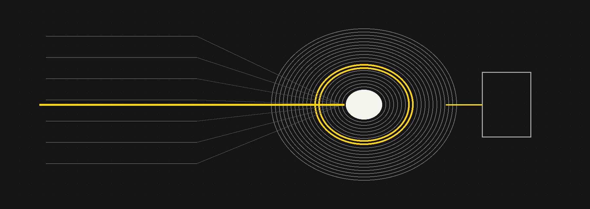
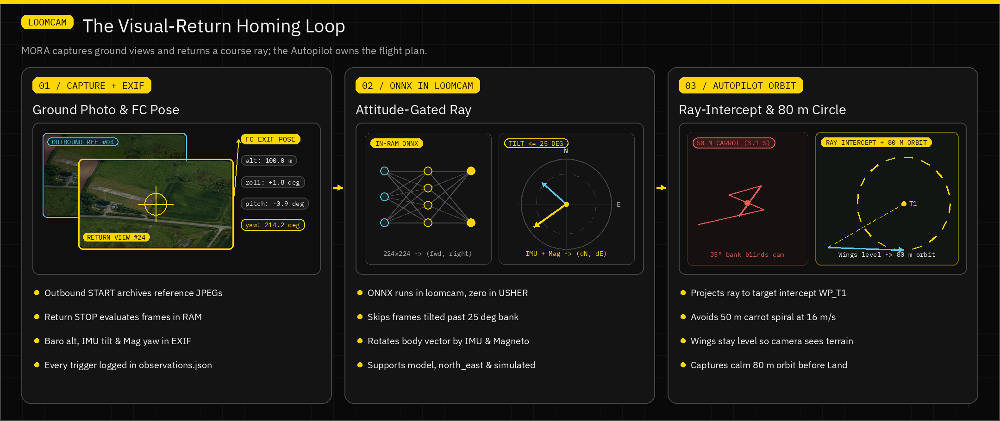
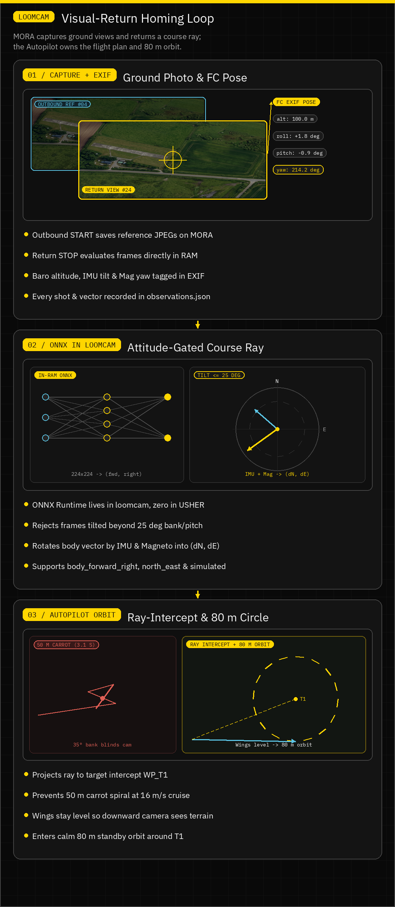
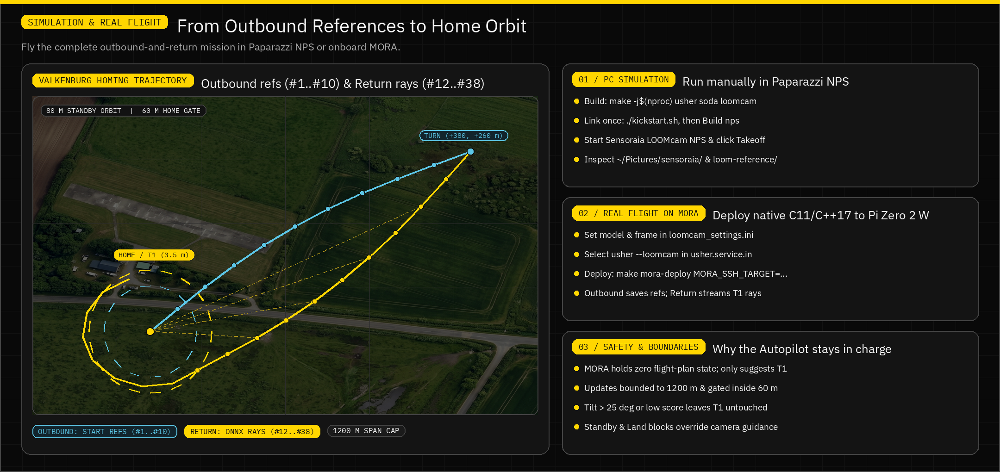
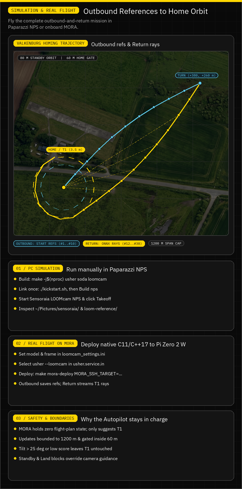

LOOMcam: Visual-Return Homing¶
LOOMcam captures outbound reference photographs on the way out and turns downward return-leg photographs into a course ray back toward HOME. On every accepted return view, T1 is updated along the predicted homing ray while the Flight Controller stays in full command of the flight plan, altitude, and landing sequence.
A trained homing network is not included. In the PC simulation, LOOMcam runs its selected ONNX model on real MIMIC camera views and can synthesize a clearly labelled, bounded homeward vector from the photo's neural features so you can fly and test the entire capture, EXIF, ONNX, and waypoint-update loop before your neural network has earned its pilot's license. Vehicle-detector outputs or generic features are never silently treated as real navigation vectors.
Visual-return terms | Try Sensoraia with Paparazzi | Paparazzi first-flight walkthrough | AI Camera setup
For PC flights, select the simulated camera profile
before launching Paparazzi Center. The LOOM session now enables the nominal
AIcam lens/shutter profile by default; LOOM_CAMERA_PROFILE=none restores the
clean pinhole camera.

How the Visual-Return Loop Works¶
Everything in the LOOMcam pipeline has a single, clear job—nobody tries to fly the airplane from inside a camera process:
- MORA (
usher+loomcam) is a stateless Flight Controller helper. It takes periodic ground photos when commanded, stamps the Flight Controller's Baro altitude, IMU roll/pitch, and Magneto heading into EXIF, runs ONNX insideloomcam, and returns a suggestedT1target. MORA holds zero flight-plan state. - USHER (
usher) handles the UART wire protocol, camera triggers, and EXIF tagging with zero embedded ONNX Runtime. - The Autopilot (Paparazzi) owns the mission blocks (
Outbound,Return,Standby,Land), validates incomingT1updates, and flies the aircraft.
| Mission Phase | Camera Command | What MORA & loomcam Do |
What the Autopilot Does |
|---|---|---|---|
| 1. Outbound | START (recording on) |
Captures downward JPEGs, stamps Baro height, IMU tilt, and Magneto yaw into EXIF, and links up to 256 reference photos into references/session-<token>/. |
Flies from HOME to TURN along the outbound leg while triggering a photo every 3 seconds with wings level. |
| 2. Return | STOP (recording off) |
Evaluates each return view in RAM without archiving extra reference copies, runs ONNX in loomcam, rotates the vector into Earth (North, East), and proposes T1. |
Flies wings-level toward T1, locks onto HOME inside the 60 m gate, and enters a calm 80 m standby orbit. |


Why Ray-Intercept + an 80 m Orbit Beats a Short Carrot¶
If you place a waypoint carrot just 50 m ahead of a fixed-wing aircraft cruising at 16 m/s, the aircraft covers that distance in 3.1 seconds. By the time the next camera frame is processed, the plane has already overrun the point and rolled into a 35° bank trying to chase its own tail. Worse yet, a belly-mounted camera banked at 35° is staring sideways at the horizon instead of looking at the terrain underneath the aircraft.
LOOMcam avoids the "dog-chasing-its-tail" spiral in two ways:
- Attitude-gated capture (
return_max_tilt_deg=25): When a turn or gust tilts the aircraft beyond 25° of roll or pitch,loomcamskips steering for that frame rather than trusting a skewed, oblique view of the countryside. - Ray-intercept projection & 80 m orbit: Instead of chasing a short carrot
under the nose,
T1is projected along the homing course ray to intercept the target area, and the flight plan transitions into a smooth 80 m standby circle once inside the 60 m home-protection radius. Wings stay level on the approach, the camera keeps a clear view of the ground, and the plane orbits calmly over home until you command landing.
What Gets Stamped Into Every Photo's EXIF¶
When the Flight Controller triggers a shot, USHER pairs the image with the
freshest autopilot pose and writes standard EXIF fields before loomcam
inspects the frame:
| Datum | Aircraft Sensor | EXIF Tag | Why loomcam Needs It |
|---|---|---|---|
Height (alt_m, agl) |
Barometer / navigation altitude | GPSAltitude + ImageDescription (agl=...) |
Scales ground-footprint geometry and logs capture height |
Roll & Pitch (phi, theta) |
IMU attitude estimator | ImageDescription (roll=... pitch=...) |
Rejects banked frames (> 25°) and corrects body-to-horizontal tilt |
Heading (psi / yaw_deg) |
Magnetometer / AHRS heading | GPSImgDirection (True North) + ImageDescription |
Rotates body (forward, right) vectors into Earth (North, East) |
| Capture Position | Autopilot navigation state | GPSLatitude, GPSLongitude |
Anchors outbound references and bounded step checks |
Run a Manual Simulated Flight on Your PC¶
You can fly the complete outbound-and-return loop at your desk without a
physical airplane or windburn. Paparazzi's NPS flies the simulated
fixed-wing aircraft, MIMIC renders realistic downward camera photographs
from your cached Valkenburg satellite tiles at the aircraft's exact pose, and
native usher + loomcam process every frame.


Step 1: Build for PC Simulation & Prepare the Ground Imagery¶
For this local NPS flight, no physical camera or camera SDK is needed. Run this complete command from your Sensoraia checkout:
CAMERA_CAPTURE=0 is an option on the make command, not a Paparazzi
setting or a flight-time switch. It leaves out physical-camera capture support
but keeps LOOM's saved-photo processing. It does not turn off the simulated
camera: USHER renders new photographs from cached ground imagery at the
simulated aircraft's current position and attitude, then passes those saved
photographs to LOOM. Keep this option on subsequent make ... loomcam commands
when rebuilding for PC-only simulation.
Before flying, prepare the aerial imagery:
- While online, open PprzGCS, select aerial/satellite imagery, and display the Valkenburg demo route at zoom 18. Pan over the whole outbound and return route, plus the surrounding ground visible to the downward camera, so those tiles are cached.
- Confirm that the cache contains zoom-18 JPEGs:
The default cache is ~/.local/share/paparazzi/pprzgcs/map. Confirming that
tiles exist does not prove every camera footprint is covered; missing tiles
can still reject a photo during flight, so cache more of the surrounding area if
that happens. The Sensoraia LOOMcam NPS session uses this cache automatically;
do not start another USHER manually. It does not download imagery during flight
or substitute a fixed test picture when tiles are missing. The pictures show
the imagery currently stored in your cache, not a live satellite feed.
If your cache is elsewhere, add --mock-map-cache /absolute/path/to/map to the
USHER command line in Paparazzi Center's Session tab.
See MIMIC: prepare the map cache
for more about the simulated camera.
Only if you also need a physical camera connected to this PC, use the camera-enabled build instead:
That alternative adds hardware capture support; it does not select the simulation's ground imagery. MORA deployment is covered separately below.
Step 2: Install Sensoraia Links Into Paparazzi¶
From the Sensoraia root (with Paparazzi installed at ~/paparazzi):
This links the Sensoraia flight plans, demo airframes, and unified control panel
into ~/paparazzi/conf/ (see the
Paparazzi setup walkthrough).
Step 3: Build & Start the Session in Paparazzi Center¶
Choose the camera profile first; Center passes its environment to the session-managed USHER.
Launch Paparazzi Center from your Paparazzi directory:
(If a MORA FTDI cable is plugged into your computer and you want a purely
PC-only flight, start Center with MORA_UART_DEVICE="" ./paparazzi. Without
that override, Sensoraia's cable-first detection automatically routes the
session to USHER on MORA.)
In Paparazzi Center:
- Ensure configuration
userconf/SENSORAIA/sensoraia_demo_conf.xmland control paneluserconf/SENSORAIA/sensoraia_demo_control_panel.xmlare selected. - Select aircraft
Easystar_3_LOOMCAM(or your own fixed-wing aircraft usingflight_plans/SENSORAIA/sensoraia_loom_cam_demo.xml), select targetnps, and click Build. - In the Session tab, select
Sensoraia LOOMcam NPSand click Execute.
Step 4: Fly Outbound, Return & Land in GCS Classic¶
- Wait for GPS: In
GCS Classic, wait a few seconds for live telemetry and a valid 3D GPS fix in Holding point. - Click
Takeoff: The aircraft climbs to 100 m nominal altitude and enters Start demo (LOOM outbound) automatically. - Watch the Outbound Leg (
OUT1$\rightarrow$OUT2): - Entering Session start sends cameraSTARTover the simulated UART. - During Outbound, downward photographs are captured periodically and hard-linked into~/Pictures/sensoraia/loom-reference/session-<token>/. - Watch the Return Leg (
Return phase$\rightarrow$Return): - Entering Return phase sends cameraSTOPto switch USHER's native LOOM worker from reference recording to return-phase evaluation. - In Return, each saved photograph is evaluated bybin/loomcamand correlatedUSHER_CAM_POINT_UPDATEmessages are processed throughcam_point_to_waypoint(USHER_CAMERA_AICAM, WP_T1)while the aircraft orbits before proceeding into the automatic Land sequence. - Stop all session programs in Paparazzi Center after landing before starting another run.
Step 5: Inspect Your Saved Photos & Reference Links¶
After the flight, inspect USHER's native output folders:
~/Pictures/sensoraia/— every captured JPEG stamped with EXIF altitude, roll, pitch, and magnetometer heading. With emulation enabled,o000006.jpgis the retained clean view ando000006.lens.jpgis the camera-profile view actually submitted to LOOM.~/Pictures/sensoraia/loom-reference/session-<token>/— the immutable outbound reference photographs hard-linked during theSTARTleg. These link the emulated JPEGs when a profile is selected, not the clean views.
(Because the bundled nn_loom_v001.rpk is a feature-only assignment rather
than a trained homing network, native loomcam reports uncalibrated/invalid
return directions unless configured with a compatible ONNX homing assignment or
return_vector_frame=simulated in loomcam_settings.ini, leaving T1 safely
unchanged rather than inventing a direction.)
Select the Simulated Camera Profile¶
The local Sensoraia LOOMcam NPS session defaults to
resources/camera_lens_aicam.json: nominal AIcam field of view, Brown
distortion, 2 ms exposure, rolling shutter, motion blur, chromatic aberration,
and configured vibration, residual shading, optical softness, sensor noise
and luma sharpening. Output matches USHER AIcam's 2028x1520 quality-90 JPEG
mode. This is an illustrative starting point, not a
measured calibration of your flight camera.
| Selection | Set before starting Center | Result |
|---|---|---|
| Default AIcam | No override | Nominal AIcam profile |
| Your camera | LOOM_CAMERA_PROFILE=/absolute/path/flight-camera.json |
Validated custom profile |
| No emulator | LOOM_CAMERA_PROFILE=none |
Original clean pinhole JPEG, no extra render |
For example, prepare your own profile from the Sensoraia root:
cp resources/camera_lens_aicam.json "$HOME/loom-flight-camera.json"
# Edit that copy, then validate it:
./bin/camera_lens --validate-profile "$HOME/loom-flight-camera.json"
In Paparazzi Center's Session tab (with Sensoraia LOOMcam NPS stopped),
update --mock-lens resources/camera_lens_aicam.json on the USHER command
line to --mock-lens /home/you/loom-flight-camera.json (or remove
--mock-lens resources/camera_lens_aicam.json for a clean pinhole baseline)
and click the play button (or Session -> Save to keep your choice). Relative
profile paths resolve from the Sensoraia root because USHER enters its own
directory at startup. Keep the profile unchanged for the whole sortie; after
editing it, start a fresh session with fresh references. This only affects PC
map simulation; a MORA session uses its real camera, without synthetic effects.
When managing USHER yourself instead of using Center:
Omit --mock-lens to disable emulation in a manually managed USHER. Add
--mock-map-cache /absolute/path/to/map for a non-default cache. Never start
this alongside the session-managed peer.
Match the Camera That Produced Your Training Photos¶
Start with measured parameters for the saved JPEG mode, not just the sensor's advertised maximum resolution:
- Set
horizontal_fov_deg,vertical_fov_deg,model, anddistortionfrom calibration in that mode. Brown coefficients are[k1,k2,p1,p2,k3]; fisheye uses[k1,k2,k3,k4]anddiagonal_fov_deg. Use OpenCV's calibration conventions. - Set
output_widthandoutput_heighttogether to match the real JPEG dimensions (for example 2028 and 1520, if that is your capture mode). Omitted or pairednullvalues preserve MIMIC's clean-view dimensions. Rendering uses the requested output grid directly, before ONNX's independent model-input resize. Do not downsize here just to conceal inference cost. - Match exposure duration (
exposure_s), shutter/readout, JPEG quality, and realistic speed/height. Keepheight_override_m=nullso the photo's flight AGL is authoritative.f_numberandfocal_length_mmrecord lens metadata; they do not simulate depth of field. - Match RGB/BGR, scaling, and resize separately in the ONNX assignment. A lens profile is not a neural model configuration, nor a PANGEA camera-calibration INI.
Compare batches with ./bin/camera_lens --measure /data/flight/*.jpg.
Follow Calibrate Against Real Captures
to compare noise, detail, shading, brightness and JPEG statistics, tune the
profile and verify a held-out real flight. The supplied profile has not been
calibrated against real AIcam flight captures.
See the complete profile settings and realism limits for units, ranges, coefficient conventions, performance controls, and calibration guidance. The Raspberry Pi AI Camera product information describes the nominal hardware, not your installed lens calibration.
What Reaches the Neural Network¶
cached imagery + capture pose -> clean JPEG + flight EXIF
-> camera_lens(profile, same pose/cache)
-> saved .lens.jpg + profile/hash provenance
-> outbound reference link OR return ONNX input
USHER runs the existing native renderer once, before the saved-image
callback. LOOM archives and reads that exact derivative; SODA receives the
same path without applying a second lens pass. Pose, GPS, AGL, and shot
identity remain attached. The derivative's EXIF records the effective profile,
its SHA-256, shutter/exposure, rendering assumptions, and source geometry.
The clean file remains available for paired comparisons. Reference filenames
still end in .jpg, but their inode is the derivative's inode.
A missing tile, invalid profile, busy renderer, timeout (90 s maximum), or
write failure rejects that simulated observation: no clean-image fallback,
no stale derivative reuse, no reference admission or new LOOM result.
Read CAMERA_LENS/IMAGE_LENS diagnostics and USHER's
lens-emulated analysis input line. The Flight Controller remains in charge.
The renderer reprojects cached terrain rather than stretching only the original
photo, so a wider profile needs a wider cached region. It uses bounded strips,
a bounded tile cache, and one renderer job at a time; it does not add OpenCV
to USHER or LOOM. Profile settings samples, threads, memory_budget_mb,
and output resolution control cost. Capture workers wait for the derivative,
so large images/many samples can miss the flight plan's 3-second photo cadence.
Check the renderer's elapsed_s and USHER's timing at your real resolution;
the timeout is a safety ceiling, not a real-time throughput promise. Lower
odd samples only after comparing blur convergence. See
resource guidance.
Adaptive exposure sampling and verified ray-grid interpolation keep the
full-effect default near 0.60 s/photo on the development PC; this is not a
whole-pipeline or onboard timing guarantee.
Satellite imagery, flat terrain, configured vibration/rates, and relative sRGB exposure cannot establish real-flight neural accuracy. Saved-image noise/shading/sharpening are approximations, not a reproduction of the Bayer sensor or complete camera ISP. Automatic exposure/white balance, physical defocus, and atmospheric or 3D-scene effects are not reproduced. Compare held-out real-flight JPEGs with simulation before calling a profile representative. The simulated homeward vector mode remains only an integration aid, even with lens emulation enabled.
Choose the Model & Vector Frame (loomcam_settings.ini)¶
Configure loomcam in modules/loom_cam/loomcam_settings.ini (or your own
copy). ONNX requires a compatible .onnx graph and descriptor; IMX500 uses a
compatible .rpk. Paths are resolved relative to the settings file. The
bundled models/nn_loom_v001.rpk is a feature-only assignment; its presence
does not establish trained homing behavior.
return_vector_frame |
How loomcam Interprets the Output |
|---|---|
none |
Extracts features and logs observations only; never moves T1 |
north_east |
First output component is North, second is East |
body_forward_right |
First component is aircraft forward, second is right; rotated into Earth (North, East) using the photo's EXIF IMU roll/pitch and Magneto heading |
simulated |
Runs the real .onnx graph, then synthesizes a slightly noisy body-frame homeward vector seeded by the photo's neural features and projects it through the 3D IMU/Magneto rotation (ideal for testing before a model is trained) |
A two-value vector has no measured confidence estimate; a three-value output
supplies (vector_0, vector_1, confidence). Vector magnitude in 0..1 scales
the lookahead step down as the aircraft approaches the target spot, while
magnitudes at or above 1 step by the full return_lookahead_m ahead of the
aircraft. Photos taken beyond return_max_tilt_deg (roll or pitch) are
rejected before steering. Match the declared RGB/BGR order, scaling, resize,
and nearest-neighbor interpolation to your training pipeline; see
ONNX model selection.
Example loomcam_settings.ini for a compatible ONNX assignment:
inference_backend=auto
input_source=live
model=models/return.onnx
model_descriptor=models/return.ini
onnx_threads=1
inference_timeout_ms=2000
return_vector_frame=body_forward_right
return_home_radius_m=60
return_lookahead_m=50
return_max_step_m=5
return_min_confidence=0.6
return_max_tilt_deg=25
Live operation steps from each photograph's aligned pose—or from hardware-bound
camera frames using barometer height and magnetometer heading when GPS
alignment is unavailable. Optional return_home_latitude and
return_home_longitude add destination hemisphere and arrival bounds when a
fixed coordinate is known.
Prepare & Fly a Real Flight with LOOMcam on MORA¶
Taking LOOMcam into the air on MORA (Raspberry Pi Zero 2 W) with the Raspberry Pi AI Camera (IMX500) uses the exact same native C11/C++17 binary pipeline—cross-compiled on your PC and deployed cleanly over SSH.
Step 1: Mount the Camera & Connect the Flight Controller UART¶
- Mount the Raspberry Pi AI Camera looking straight down (nadir) with an unobstructed view beneath the fuselage.
- Connect the Flight Controller UART to MORA (
/dev/serial0at115200baud, 3.3 V UART logic, crossedTX/RX, and common ground). - In your aircraft's airframe XML, ensure
digital_cam_uarthasDIGITAL_CAM_UART_POSE_STREAM=1enabled so MORA receives live Baro altitude, IMU roll/pitch, and Magneto heading with every trigger.
Step 2: Prepare Your loomcam_settings.ini¶
Copy modules/loom_cam/loomcam_settings.ini to a flight configuration file and
point model and model_descriptor to your trained return network.
- Keep
return_vector_frame=nonefor initial data-collection flights where you only want to record outbound/return imagery and verify inference timing. - Switch to
return_vector_frame=body_forward_right(ornorth_east) only after validating your model on representative aerial views from your flying site.
Step 3: Select CAMERA=loomcam For MORA¶
AIcam, Spottercam, and LOOMcam are alternative owners of the same physical
IMX500 camera (Spottercam is the default when CAMERA is left unchanged).
Set CAMERA = loomcam in camera.conf at the Sensoraia root, or pass
CAMERA=loomcam directly when packaging and deploying.
Step 4: Package & Deploy to MORA¶
Use the standard MORA deployment workflow
with CAMERA=loomcam and pass your settings file via MORA_LOOMCAM_SETTINGS:
make -j32 mora-deploy \
CAMERA=loomcam \
MORA_SSH_TARGET=air@theatre.local \
MORA_LOOMCAM_SETTINGS=/absolute/path/loomcam_settings.ini
This cross-compiles the ARM64 binaries on your PC, configures usher.service
to start usher --loomcam, installs the graph, descriptor, and settings under
share/loomcam/ on MORA, and restarts usher.service. (To build the package
without contacting MORA, run
make -j32 mora-package CAMERA=loomcam MORA_LOOMCAM_SETTINGS=/absolute/path/loomcam_settings.ini.)
Confirm the service is running on MORA:
ssh air@theatre.local 'systemctl --no-pager --full status usher.service'
ssh air@theatre.local 'journalctl -u usher.service -n 40 --no-pager'
Step 5: Optional FTDI Desk Flight Before Going to the Field¶
Before flying the aircraft, you can connect your laptop's FTDI cable to MORA
(5 V power, common ground, crossed 3.3 V TX/RX; see the
FTDI desk-test guide) and start the Sensoraia
LOOMcam NPS session in Paparazzi Center. With the cable attached, the
simulator automatically uses your real MORA board (execution: MORA) instead
of a local PC peer.
Step 6: What Happens During the Real Flight¶
- Takeoff & Standby: Take off normally and verify stable telemetry, GPS,
barometer altitude, and magnetometer heading in
pprzgcs. - Outbound Leg (
START): Entering the outbound block sendsSTARTto USHER on MORA. Native USHER creates a fresh, exclusivereferences/session-<token>/directory for the sortie and links up to 256 downward reference photographs with full EXIF pose tags. - Return Leg (
STOP): Entering the return block sendsSTOP, locking the outbound reference set for the sortie while periodic captures continue. Each level return photo (<= 25°tilt) is evaluated in RAM byloomcamwithout writing extra reference copies to the SD card. - Approaching
HOME& Landing: Accepted return vectors stepT1toward the return spot, bounded within 1200 m and gated insidereturn_home_radius_m(60 m). Once at the return circle, the aircraft orbitsT1calmly at 80 m radius until you command Land.
Keep References Separate & Troubleshoot¶
Use a clean reference directory for each sortie, and never mix different model feature spaces or edit hard-linked originals.
- Per-sortie reference caps: Each
STARTcreates a newsession-<token>directory underreferences/, capped at 256 hard links per session and 64 top-level sessions. Once at the 256-photo cap, photos are still captured and evaluated normally, with no further reference links added. Existing sorties are never silently deleted; archive or remove old sessions deliberately before storage runs low. - Strict startup and confirmation: Missing, feature-only, or incompatible
model assignments are rejected at startup. Rejected vectors never move
T1. Missing waypoint confirmation does not commit a proposed target, and its confirmation channel enforces a four-second deadline.
If Return Updates Stop¶
| What You See | Why It Happens | What to Do |
|---|---|---|
A shot during a turn produces no T1 move |
Roll or pitch exceeded return_max_tilt_deg (25°) |
Normal! Wait for the aircraft to roll wings-level on the straight leg |
T1 stops updating near HOME |
Aircraft is inside return_home_radius_m (60 m) |
Normal! T1 holds at HOME so the aircraft can fly a steady 80 m standby orbit |
No T1 updates on straight, level legs |
return_vector_frame=none, confidence below threshold, or model/descriptor mismatch |
Read the helper or journal diagnostic; check loomcam_settings.ini and model paths |
Capture rejected with --mock-map |
Missing zoom-18 tile in the local PprzGCS cache |
Pan over the missing area at zoom 18 in PprzGCS so ~/.local/share/paparazzi/pprzgcs/map/GOOGLE/18 is populated |
When updates stop for any reason, the Flight Controller retains its existing target and normal flight-plan behavior—the absence of a visual update is never treated as a new fix. Use the mission's normal Standby or Land controls to manage the flight.
PC simulation demonstrates end-to-end integration, not visual homing accuracy. Before relying on a model onboard, validate it on independent representative views, check camera calibration and timing, and verify MORA's combined memory and CPU headroom.